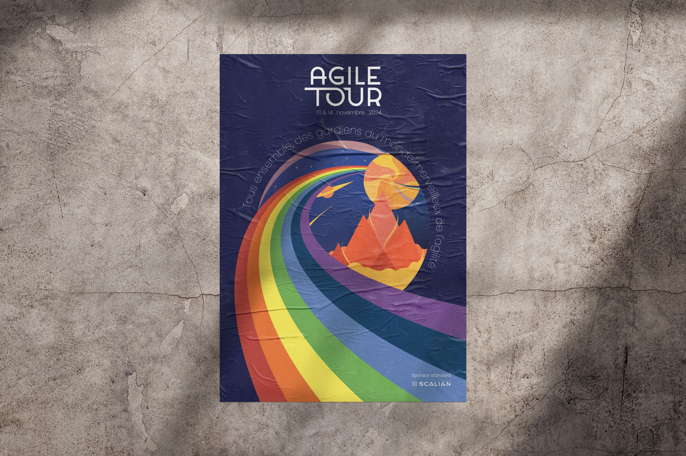
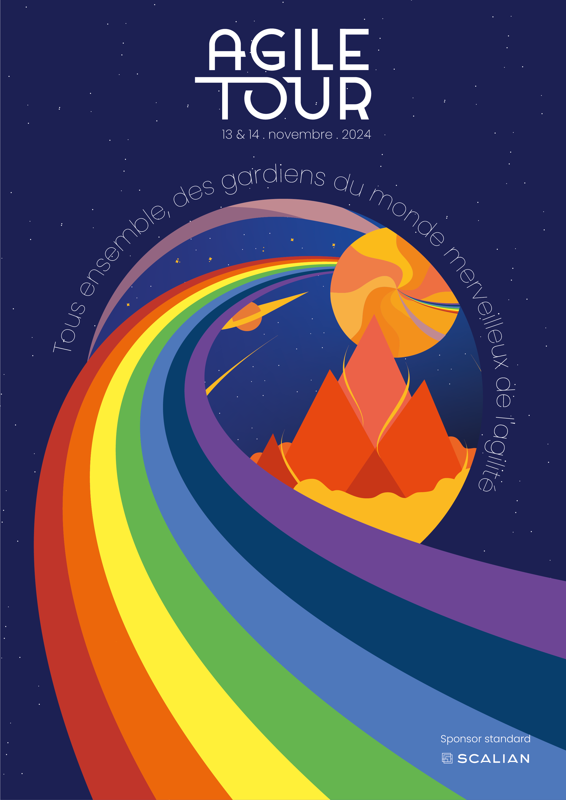

Agile Tour
En novembre 2024, Scalian a participé à l’Agile Tour Rennes, un événement dédié aux méthodes agiles. À cette occasion, j’ai été chargé de concevoir une affiche pour promouvoir l’événement en interne et proposer un support à faire gagner aux visiteurs sur le stand de Scalian lors de l’événement.

La création de cette affiche devait intégrer trois éléments imposés :
le slogan « Tous ensemble, des gardiens du monde merveilleux de l’agilité », la date de l’événement et le logo de Scalian.
Pour le reste, j’avais carte blanche. J’ai choisi d’explorer l’univers du « monde merveilleux »
à travers un arc-en-ciel qui guide le regard vers une faille spatiale circulaire,
comme une porte vers un autre monde. Les couleurs occupent une place centrale dans la composition
afin de renforcer cet univers fantastique et immersif.
